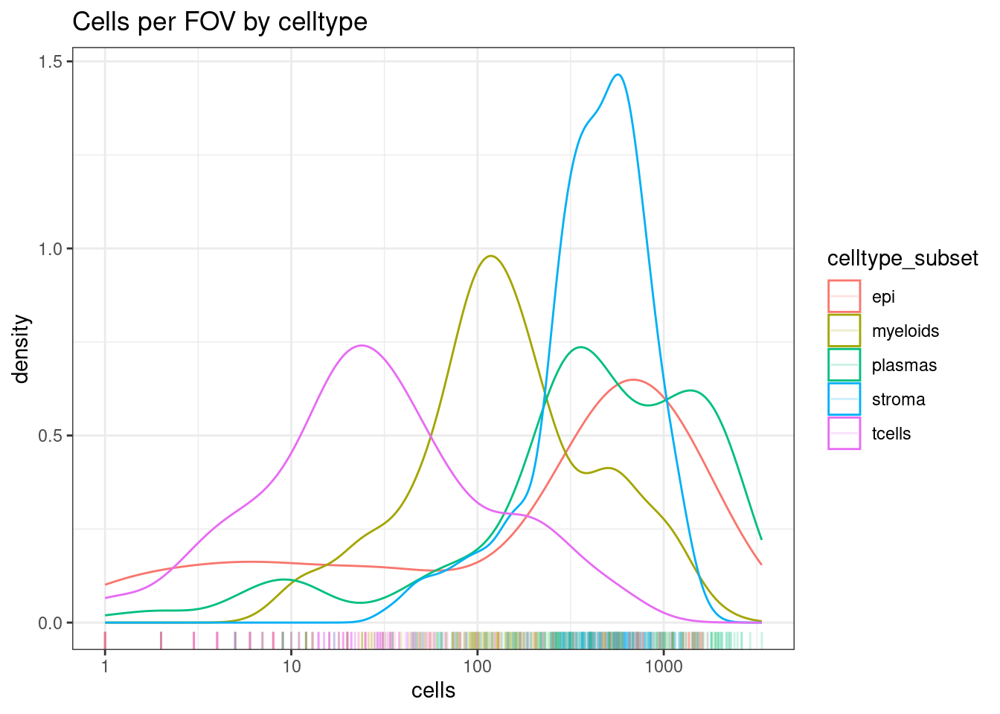

Differential celltype composition between groups
Sarah Williams
Last updated: 2024-03-22
Checks: 7 0
Knit directory: spatialsnippets/
This reproducible R Markdown analysis was created with workflowr (version 1.7.0). The Checks tab describes the reproducibility checks that were applied when the results were created. The Past versions tab lists the development history.
Great! Since the R Markdown file has been committed to the Git repository, you know the exact version of the code that produced these results.
Great job! The global environment was empty. Objects defined in the global environment can affect the analysis in your R Markdown file in unknown ways. For reproduciblity it’s best to always run the code in an empty environment.
The command set.seed(20231017) was run prior to running
the code in the R Markdown file. Setting a seed ensures that any results
that rely on randomness, e.g. subsampling or permutations, are
reproducible.
Great job! Recording the operating system, R version, and package versions is critical for reproducibility.
Nice! There were no cached chunks for this analysis, so you can be confident that you successfully produced the results during this run.
Great job! Using relative paths to the files within your workflowr project makes it easier to run your code on other machines.
Great! You are using Git for version control. Tracking code development and connecting the code version to the results is critical for reproducibility.
The results in this page were generated with repository version 89c3371. See the Past versions tab to see a history of the changes made to the R Markdown and HTML files.
Note that you need to be careful to ensure that all relevant files for
the analysis have been committed to Git prior to generating the results
(you can use wflow_publish or
wflow_git_commit). workflowr only checks the R Markdown
file, but you know if there are other scripts or data files that it
depends on. Below is the status of the Git repository when the results
were generated:
Ignored files:
Ignored: .DS_Store
Ignored: .Rhistory
Ignored: .Rproj.user/
Ignored: analysis/d_DigitsDish.nb.html
Ignored: analysis/d_cosmxIBD.nb.html
Ignored: analysis/e_CompositionChange.nb.html
Ignored: analysis/e_DEPseudobulk.nb.html
Ignored: analysis/e_DEWithoutReps.nb.html
Ignored: renv/library/
Ignored: renv/staging/
Untracked files:
Untracked: analysis/d_cosmxLiver.Rmd
Untracked: analysis/d_cosmxLung.Rmd
Untracked: code/Seurat_loadNanostring_production_bugxfix.R
Untracked: code/d_cosmxLiver_subsetting.R
Untracked: d_cosmxLung.nb.html
Untracked: notes/
Unstaged changes:
Modified: analysis/d_cosmxIBD.Rmd
Modified: analysis/e_DEPseudobulk.Rmd
Modified: renv.lock
Note that any generated files, e.g. HTML, png, CSS, etc., are not included in this status report because it is ok for generated content to have uncommitted changes.
These are the previous versions of the repository in which changes were
made to the R Markdown (analysis/e_CompositionChange.Rmd)
and HTML (docs/e_CompositionChange.html) files. If you’ve
configured a remote Git repository (see ?wflow_git_remote),
click on the hyperlinks in the table below to view the files as they
were in that past version.
| File | Version | Author | Date | Message |
|---|---|---|---|---|
| Rmd | 89c3371 | Sarah Williams | 2024-03-22 | wflow_publish(c("analysis/index_data.Rmd", "analysis/index.Rmd", |
Is there a difference in the celltype composition between individuals with Ulcerative colitis or Crohn’s disease, and Healthy controls?
Load libraries and data object
library(Seurat)Loading required package: SeuratObjectLoading required package: sp
Attaching package: 'SeuratObject'The following object is masked from 'package:base':
intersectlibrary(speckle)
library(tidyverse)── Attaching core tidyverse packages ──────────────────────── tidyverse 2.0.0 ──
✔ dplyr 1.1.3 ✔ readr 2.1.4
✔ forcats 1.0.0 ✔ stringr 1.5.0
✔ ggplot2 3.4.4 ✔ tibble 3.2.1
✔ lubridate 1.9.3 ✔ tidyr 1.3.0
✔ purrr 1.0.2 ── Conflicts ────────────────────────────────────────── tidyverse_conflicts() ──
✖ dplyr::filter() masks stats::filter()
✖ dplyr::lag() masks stats::lag()
ℹ Use the conflicted package (<http://conflicted.r-lib.org/>) to force all conflicts to become errorsdata_dir <- file.path("~/data_local/datasets/GSE234713_IBDcosmx_GarridoTrigo2023/processed_data")
seurat_file_01_loaded <- file.path(data_dir, "GSE234713_CosMx_IBD_seurat_01_loaded.RDS")so <- readRDS(seurat_file_01_loaded)
# MIGRATE TO DATA PREP >>>>
so$individual_code <- factor(substr(so$orig.ident,12,16))
so$tissue_sample <- factor(substr(so$orig.ident,12,16))
so$fov_name <- paste0(so$individual_code,"_", str_pad(so$fov, 3, 'left',pad='0'))
so$celltype_subset <- factor(so$celltype_subset)
# <<<<Looking at the data
There are three indivduals per contidion (one tissue sample from each individual). With multiple fovs on each physical tissue sample.
select(as_tibble(so@meta.data), condition, individual_code, fov_name) %>%
unique() %>%
group_by(condition, individual_code) %>%
summarise(n_fovs= n(), item = str_c(fov_name, collapse = ", "))`summarise()` has grouped output by 'condition'. You can override using the
`.groups` argument.# A tibble: 9 × 4
# Groups: condition [3]
condition individual_code n_fovs item
<chr> <fct> <int> <chr>
1 Chrones's disease CD_a 19 CD_a_001, CD_a_002, CD_a_003, CD_a_…
2 Chrones's disease CD_b 19 CD_b_002, CD_b_003, CD_b_004, CD_b_…
3 Chrones's disease CD_c 16 CD_c_001, CD_c_002, CD_c_003, CD_c_…
4 Healthy controls HC_a 19 HC_a_001, HC_a_002, HC_a_003, HC_a_…
5 Healthy controls HC_b 20 HC_b_001, HC_b_002, HC_b_003, HC_b_…
6 Healthy controls HC_c 16 HC_c_001, HC_c_002, HC_c_003, HC_c_…
7 Ulcerative colitis UC_a 19 UC_a_001, UC_a_002, UC_a_005, UC_a_…
8 Ulcerative colitis UC_b 22 UC_b_001, UC_b_002, UC_b_003, UC_b_…
9 Ulcerative colitis UC_c 21 UC_c_001, UC_c_002, UC_c_003, UC_c_…Full worked example
Count how many cells of each type in your data
celltype_summary_table <- so@meta.data %>%
group_by(condition, individual_code, fov_name, celltype_subset) %>%
summarise(cells=n(), .groups = 'drop')check for very low count groups
Here T cells are rare, but there are still a decent distribution of them with 10-100+ cells in a FOV.
If many of your celltypes, consider merging similar cell types (e.g. T cells rather than T cell subtypes)
ggplot(celltype_summary_table, aes(x=cells, col=celltype_subset)) +
geom_density() +
geom_rug(alpha=0.2) +
scale_x_log10() +
theme_bw() +
ggtitle("Cells per FOV by celltype")
If you have alot of cell types, sometimes there can be very rare types that would be hard to detect differences in.
This can expecially happen if you’re using celltype assignment with a detailed reference. You might get a handful of irrelevant cell types called (e.g. 4 hepatocytes on a non-liver sample). No reasonable stats could be generated there, and leaving them in would mean a more extreme FDR adjustment.
celltype_summary_table.SingleR <- so@meta.data %>%
group_by(condition, individual_code, fov_name, celltype_SingleR2) %>%
summarise(cells=n(), .groups = 'drop')
ggplot(celltype_summary_table.SingleR, aes(x=cells, col=celltype_SingleR2)) +
geom_density() +
geom_rug(alpha=0.2) +
scale_x_log10() +
theme_bw() +
ggtitle("Cells per FOV by celltype")Look at your samples.
ggplot(celltype_summary_table, aes(x=fov_name, y=cells, fill=celltype_subset)) +
geom_bar(position="fill", stat="identity") +
theme_bw() +
coord_flip() +
theme(legend.position = "bottom") +
facet_wrap(~condition, ncol=3, scales = 'free_y') +
scale_y_continuous(expand = c(0,0)) 
Calculate stats.
results.anova <- propeller(clusters= so$celltype_subset,
sample = so$individual_code,
group = so$condition)Performing logit transformation of proportionsgroup variable has > 2 levels, ANOVA will be performedresults.anova BaselineProp PropMean.Chrones.s.disease PropMean.Healthy.controls
epi 0.2336112 0.25884773 0.40528423
myeloids 0.1242437 0.12933965 0.06414522
stroma 0.2397435 0.21120914 0.24761081
plasmas 0.3692386 0.36680895 0.25076104
tcells 0.0331629 0.03379454 0.03219870
PropMean.Ulcerative.colitis Fstatistic P.Value FDR
epi 0.21803174 1.2861724 0.3216825 0.7534123
myeloids 0.10678699 0.4468305 0.6528237 0.7534123
stroma 0.27412907 0.4228438 0.6672889 0.7534123
plasmas 0.38515297 0.3440366 0.7176420 0.7534123
tcells 0.01589923 0.2920340 0.7534123 0.7534123# If a column is preferred over rownames
results.anova.table <- rownames_to_column( results.anova, var="celltype_subset")so.UCvsHC <- so[,so$condition %in% c("Healthy controls", "Ulcerative colitis")]
results.pair <- propeller( clusters= so.UCvsHC$celltype_subset,
sample = so.UCvsHC$individual_code,
group = so.UCvsHC$condition)Performing logit transformation of proportionsgroup variable has 2 levels, t-tests will be performedCode snippet
library(speckle)
# seurat object so
results_table <- propeller(clusters = so$cluster,
sample = so$sample,
group = so$condition)Results
results.anova BaselineProp PropMean.Chrones.s.disease PropMean.Healthy.controls
epi 0.2336112 0.25884773 0.40528423
myeloids 0.1242437 0.12933965 0.06414522
stroma 0.2397435 0.21120914 0.24761081
plasmas 0.3692386 0.36680895 0.25076104
tcells 0.0331629 0.03379454 0.03219870
PropMean.Ulcerative.colitis Fstatistic P.Value FDR
epi 0.21803174 1.2861724 0.3216825 0.7534123
myeloids 0.10678699 0.4468305 0.6528237 0.7534123
stroma 0.27412907 0.4228438 0.6672889 0.7534123
plasmas 0.38515297 0.3440366 0.7176420 0.7534123
tcells 0.01589923 0.2920340 0.7534123 0.7534123- rownames :
- BaselineProp
- PropMean.Chrones.s.disease
- PropMean.Healthy.controls
- PropMean.Ulcerative.colitis
- Fstatistic
- P.Value
- FDR
More information
- Propeller paper: https://academic.oup.com/bioinformatics/article/38/20/4720/6675456
sessionInfo()R version 4.3.1 (2023-06-16)
Platform: aarch64-apple-darwin20 (64-bit)
Running under: macOS Sonoma 14.4
Matrix products: default
BLAS: /Library/Frameworks/R.framework/Versions/4.3-arm64/Resources/lib/libRblas.0.dylib
LAPACK: /Library/Frameworks/R.framework/Versions/4.3-arm64/Resources/lib/libRlapack.dylib; LAPACK version 3.11.0
locale:
[1] en_US.UTF-8/en_US.UTF-8/en_US.UTF-8/C/en_US.UTF-8/en_US.UTF-8
time zone: Australia/Brisbane
tzcode source: internal
attached base packages:
[1] stats graphics grDevices datasets utils methods base
other attached packages:
[1] lubridate_1.9.3 forcats_1.0.0 stringr_1.5.0 dplyr_1.1.3
[5] purrr_1.0.2 readr_2.1.4 tidyr_1.3.0 tibble_3.2.1
[9] ggplot2_3.4.4 tidyverse_2.0.0 speckle_1.2.0 Seurat_5.0.1
[13] SeuratObject_5.0.0 sp_2.1-1 workflowr_1.7.0
loaded via a namespace (and not attached):
[1] RcppAnnoy_0.0.21 splines_4.3.1
[3] later_1.3.1 polyclip_1.10-6
[5] fastDummies_1.7.3 lifecycle_1.0.3
[7] edgeR_4.0.16 rprojroot_2.0.3
[9] globals_0.16.2 processx_3.8.2
[11] lattice_0.21-8 MASS_7.3-60
[13] magrittr_2.0.3 limma_3.58.1
[15] plotly_4.10.3 sass_0.4.7
[17] rmarkdown_2.23 jquerylib_0.1.4
[19] yaml_2.3.7 httpuv_1.6.11
[21] sctransform_0.4.1 spam_2.10-0
[23] spatstat.sparse_3.0-3 reticulate_1.34.0
[25] cowplot_1.1.1 pbapply_1.7-2
[27] RColorBrewer_1.1-3 abind_1.4-5
[29] zlibbioc_1.48.0 Rtsne_0.16
[31] GenomicRanges_1.54.1 BiocGenerics_0.48.1
[33] git2r_0.32.0 GenomeInfoDbData_1.2.11
[35] IRanges_2.36.0 S4Vectors_0.40.2
[37] ggrepel_0.9.4 irlba_2.3.5.1
[39] listenv_0.9.0 spatstat.utils_3.0-4
[41] goftest_1.2-3 RSpectra_0.16-1
[43] spatstat.random_3.2-1 fitdistrplus_1.1-11
[45] parallelly_1.36.0 leiden_0.4.3
[47] codetools_0.2-19 DelayedArray_0.28.0
[49] tidyselect_1.2.0 farver_2.1.1
[51] matrixStats_1.0.0 stats4_4.3.1
[53] spatstat.explore_3.2-5 jsonlite_1.8.7
[55] ellipsis_0.3.2 progressr_0.14.0
[57] ggridges_0.5.4 survival_3.5-7
[59] tools_4.3.1 ica_1.0-3
[61] Rcpp_1.0.11 glue_1.6.2
[63] gridExtra_2.3 SparseArray_1.2.4
[65] xfun_0.39 MatrixGenerics_1.14.0
[67] GenomeInfoDb_1.38.7 withr_2.5.1
[69] BiocManager_1.30.22 fastmap_1.1.1
[71] fansi_1.0.5 callr_3.7.3
[73] digest_0.6.33 timechange_0.2.0
[75] R6_2.5.1 mime_0.12
[77] colorspace_2.1-0 scattermore_1.2
[79] tensor_1.5 spatstat.data_3.0-3
[81] utf8_1.2.4 generics_0.1.3
[83] renv_1.0.0 data.table_1.14.8
[85] httr_1.4.6 htmlwidgets_1.6.2
[87] S4Arrays_1.2.1 whisker_0.4.1
[89] uwot_0.1.16 pkgconfig_2.0.3
[91] gtable_0.3.4 lmtest_0.9-40
[93] SingleCellExperiment_1.24.0 XVector_0.42.0
[95] htmltools_0.5.5 dotCall64_1.1-0
[97] scales_1.2.1 Biobase_2.62.0
[99] png_0.1-8 knitr_1.43
[101] rstudioapi_0.15.0 tzdb_0.4.0
[103] reshape2_1.4.4 nlme_3.1-162
[105] cachem_1.0.8 zoo_1.8-12
[107] KernSmooth_2.23-22 parallel_4.3.1
[109] miniUI_0.1.1.1 pillar_1.9.0
[111] grid_4.3.1 vctrs_0.6.3
[113] RANN_2.6.1 promises_1.2.0.1
[115] xtable_1.8-4 cluster_2.1.4
[117] evaluate_0.21 cli_3.6.1
[119] locfit_1.5-9.9 compiler_4.3.1
[121] rlang_1.1.1 crayon_1.5.2
[123] future.apply_1.11.0 labeling_0.4.3
[125] ps_1.7.5 getPass_0.2-2
[127] plyr_1.8.9 fs_1.6.3
[129] stringi_1.7.12 viridisLite_0.4.2
[131] deldir_1.0-9 munsell_0.5.0
[133] lazyeval_0.2.2 spatstat.geom_3.2-7
[135] Matrix_1.6-1.1 RcppHNSW_0.5.0
[137] hms_1.1.3 patchwork_1.1.3
[139] future_1.33.0 statmod_1.5.0
[141] shiny_1.7.5.1 highr_0.10
[143] SummarizedExperiment_1.32.0 ROCR_1.0-11
[145] igraph_1.5.1 bslib_0.5.0